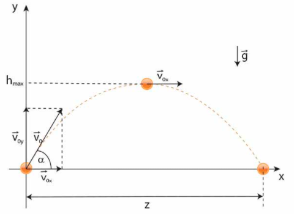

Rzut poziomy jest to ruch ciała w jednorodnym polu grawitacyjnym, wyrzuconego poziomo z pewną prędkością początkową
V0 (prostopadłą do kierunku pola) z danej wysokości H0 nad poziomem zerowym.
W naszych rozważaniach pomijamy opory powietrza. Ciało wyrzucone poziomo w kierunku osi Ox ma początkową prędkość V0.
Zauważmy, że w tym kierunku ciało nie doznaje żadnego przyspieszenia, więc prędkość się nie zmienia. Ruch ciała w kierunku osi Ox
jest ruchem jednostajnym ze stałą prędkością. Współrzędna x w każdej chwili ruchu jest równa zatem x=V0t.
Ciało to jednocześnie spada swobodnie w kierunku osi Oy, czyli porusza się ruchem jednostajnie przyspieszonym. Gdy pominiemy opory
ruchu, trajektoria rzutu opisana jest parabolą.
Rys.1 Wykres rzutu poziomego.
Zastosowanie rzutu poziomego w rożnych dziedzinach.
Opis ruchu rzutu poziomego
(Pomijamy opory ruchu)
Podczas rzutu poziomego obserwujemy złożeniem dwóch ruchów:
Ruch ciała jednostajny prostoliniowy w kierunku poziomym z prędkością początkową V0
Ruch jednostajnie przyspieszony w kierunku pionowym bez prędkości początkowej dzięki stałemu działaniu na ciało siły grawitacji g.
Opis tekstowy
Wzór
Wartość prędkości poziomej
$$Vx = Vo = const$$
Wartość prędkości pionowej
$$Vy = -g*t$$
Zasięg maksymalny
$$ z = Vo * \sqrt{2*Ho \over g}$$
Czas spadku swobodnego
$$ts = \sqrt{2*Ho\over g}$$
Równanie toru rzutu poziomego
$$y = Ho - {g*x^2 \over 2 * Vo^2}$$
Symulacja rzutu poziomego
Parametr
Wartość
Zasieg maksymalny
-
Czas spadku swobodnego
-
Vx
-
Vy
-
Siła grawitacji:
Predkosc początkowa:
Wyoskosc początkowa:
Rzut ukośny
W rzucie ukośnym mamy do czynienia z lotem ciała wyrzuconego z poziomu zerowego (H0 = 0) w jednorodnym polu grawitacyjnym.
Ciału jest nadawana prędkość o wartości V0, skierowana pod kątem α do poziomu. Ciało porusza się łukiem, by po pewnym czasie opaść na ziemię.
Podobnie jak w przypadku rzutu poziomego, gdy pominiemy opory ruchu, trajektoria rzutu ukośnego będzie określona przez parabolę.

Rys.1 Wykres rzutu ukośnego z pewnej wysokości h.
Zastosowanie rzutu ukośnego.
Opis ruchu rzutu ukośnego
(Pomijamy opory ruchu)
W przypadku gdy nie musimy uwzględniać oporu powietrza, ruch ciała rozkłada się wtedy na dwa ruchy prostsze:
Ruch w poziomie (współrzędna x-owa) – odbywa się ze stałą prędkością o wartości składowej poziomej prędkości początkowej V0x,
Ruch w pionie (współrzędna x-owa) – jest w istocie rzutem pionowym, czyli ruchem jednostajnie zmiennym z prędkością początkową równą składowej pionowej
V0y. Mozna podzielić go na dwa etapy:
Ruch od wysokości początkowej do osiągnięcia maksymalnej wysokości (prędkość Vy wówczas maleje),
Ruch od wysokości maksymalnej do osiągnięcia wysokości minimalnej - 0 (prędkość Vy wówczas rośnie).
Poniższa strona jest rozwiązaniem projektu nr 1 z przedmiotu Techniki Internetowe 2021.
Wykorzystane technologie:
HTML5
CSS 3.0
JavaScript
Temat i zawartość merytoryczna
Tematem projektu jest symulacja rzutu poziomego oraz ukośnego ¯\_(ツ)_/¯. Strona internetowa zawiera górne menu dzięki któremu wygodnie można się przemieszczać pomiędzy sekcjami strony.
Informacje będące wstępem teoretycznym do zagadnień rzutów znajdują się pod opcjami:
rzut poziomy - teoria,
rzut ukośny - teoria.
Symulacje obrazujące wybrane zagadnienie fizyczne zostały umieszczone pod opcjami:
rzut poziomy - symulacja,
rzut ukośny - symulacja.
Działanie symulacji
Interfejs symulacji składa się z:
elementu canvas, umożliwiającego wyświetlanie symulacji,
tabeli z aktualizowanymi parametrami rzutu,
pól wyboru parametrów startowych symulacji,
przycisku odpowiadającego za wyświetlenie prostej animacji.
Trajektoria aktualizowana jest po zmianie dowolnego parametru początkowego, a po naciśnieciu przycisku "symulacja" pojawia się prosta animacja.
Reset symulacji następuje po zmianie parametrów początkowych.
Język HTML5
Korzystając z elementów języka HTML wykonano szkielet strony wraz z odpowiednim formatowaniem treści. Wykorzystano elementy takie jak:
<header>, <nav>, <article>, <video>, <footer>.
Przy użyciu elementu <canvas> wykonano przedstawienie graficzne rzutów.
Język JavaScript
Do modyfikacji dokumentu HTML5 posłużono się elementami języka JavaScript i funkcjami takimi jak: getElementById oraz innerHTML.
Funkcje on... umożliwiły obsługę zdarzeń, a operacje na własnościach styli: style.display : none/block.
Walidacja
Strona waliduje się poprawnie na stronie W3C zgodnie ze standardem HTML5 i CSS.